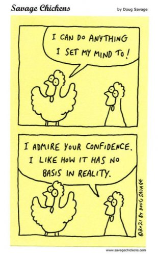

--Garth Brooks
Participant: What about manifesting things in your life?
Byron Katie: Why would I cheat myself? Why would I think so small?
"The secret to happiness is none of your damn business."
--God, on Twitter
My lovely friend is worried. Well, ok yeah, more like terrified.
Because for years she’s been convinced she won’t have enough money later in life.
She envisions retiring with nothing, just the shopping cart and mattress under the bridge, or the dank dingy one room apartment.
I mean, she’s getting by ok now.
But there’s no comfort in that, because she’s focused on a very deficient later, and flooding her current life with an abundance of fear.
Which is why she’s trying very intently to manifest future money. Visualizing incoming checks, big bank balances, pension with plenty of commas. Reciting positive affirmations to cheer herself on.
Trying to make her thoughts align with a positive vibration and create an abundance mindset.
Whatever any of that even is.
Now of course this person is not alone in her efforts and beliefs. Manifesting is a very popular idea. Many many folks, maybe even you too, believe that if we just think right, we can have everything we want.
And that every like and preference can, and should, be manifested.
By, y’know, us.
And of course it’s easy to see the great appeal of that kind of personal human power.
After all, the self loves to pretend all happenings in the universe revolve around it.
It’s just that maybe we're a little confused.
First, because how can anyone get an abundance mindset by starting from a mindset of, “not enough?”
Which is where all manifesting starts from. Lack and not-enough is what creates the need for manifesting in the first place.
Yet abundance means more than enough. Needing more is the opposite of that.
And if there’s more than enough, then there’s already abundance. So why would anyone ever need to manifest?
The whole premise makes no sense.
Not to mention, what’s listening? What’s interested in noticing humans’ properly-worded requests, and based on them, meting out rewards and occasionally granting plenty of money and love and other enoughnesses?
Energy? The Universe? God? Life? Existence?
Whatever any of those things are, are we saying it's helpless in the face of the magnetizing power of human thoughts? Are we saying that what it wants doesn’t matter? Are we saying that the universe or God doesn’t already have things just the way it likes?
Does the universe needs humans to visualize properly so it knows what to do next?
Does existence hear our properly manifested thought and say, “Oh yes that’s right, I forgot about giving Judy her millions of dollars. I can’t resist the attraction of her abundance mentality. Silly me, let me correct that error right now.”
Apparently we believe that if life or the universe has a different preference than ours, it's in error.
And in that case, our preference should take priority.
I mean here’s the universe, energy, existence, doing its thing, minding its business as it has done for over 3 billion years,
and then, in the last 300,000 years, along come humans with the idea that more money or more love or less suffering would make things better.
And we- mighty puppet masters all- think the universe says, “Oops! My bad.”
Um, what?
Besides, how have we not noticed that trying to control the attractions of the universe brings lots what we don’t want - unease, worry, deprivation, guilt, sadness, anxiety.
Ugh.
So if abundance is what is needed, why not start with noticing how abundant life is, already?
Because how can more come to anyone who disregards the incredible richness of what has already shown up?
It could just be that, with a focus on what’s here instead of what isn’t, we might discover that despite what we think,
there is no lack.
No need for more.
No need for more money, safety, love, peace, enlightenment.
We might discover the huge relief of already-here abundance.
We might discover the huge relief of not being responsible, or at fault, for what existence is already providing.
We might discover a trust, a surrender, a peace in the enormity of what is here.
Which just might turn out to be more abundance
than we will ever know
what to do with.
"If you take your hands off the tiller, the boat will steer itself and do a vastly better job of it than you ever would. If there were a secret to happiness in life, i would say that was it."
--Jed McKenna
Questioner: "What is the secret of your serenity?"
Master: "Wholehearted cooperation with the inevitable."
--Anthony deMello
"The real secret is to love what is."
--Byron Katie
